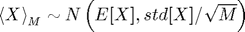
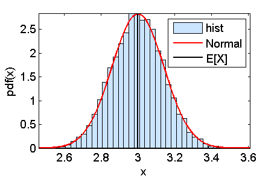

Contents
function demo_sampleAverage
demo_sampleAverage: Expected values vs. sample averages
Parameters of the distribution
mu = 3.0; sigma = 2.0;
Empirical support
R = 10.0; xLow = mu - R*sigma; xUpp = mu + R*sigma;
Generate B samples of size M
B = 10000; M = 200; X = mu + sigma*randn(M,B);
Sample mean
% B estimates of the sample mean sampleMean = mean(X); % Each estimate is over a sample of size M
Expected value, variance, standard deviation
% function f_X = @(x)(normpdf(x,mu,sigma)); % statistics E_X = expectedValue(@(x)(x),f_X,xLow,xUpp); var_X = expectedValue(@(x)((x-E_X).^2),f_X,xLow,xUpp); std_X = sqrt(var_X);
Central limit theorem

modelPdf = @(x)(normpdf(x,E_X,std_X/sqrt(M)));
Plot the results
figure(1); graphicalComparisonPdf(sampleMean,modelPdf) hold on; plot([E_X E_X], [0,modelPdf(E_X)],'k') hold off; legend('hist','Normal','E[X]')